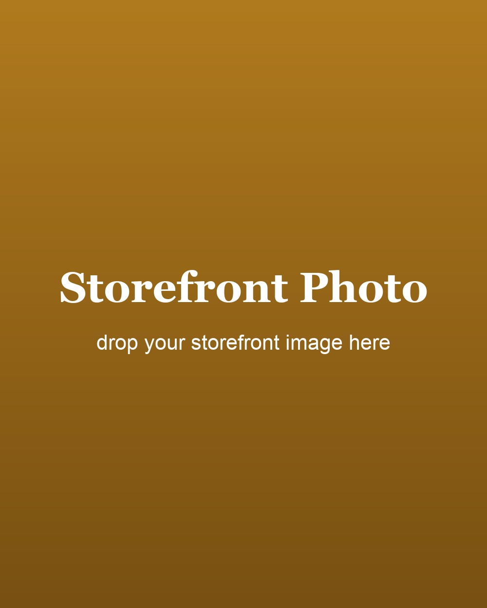
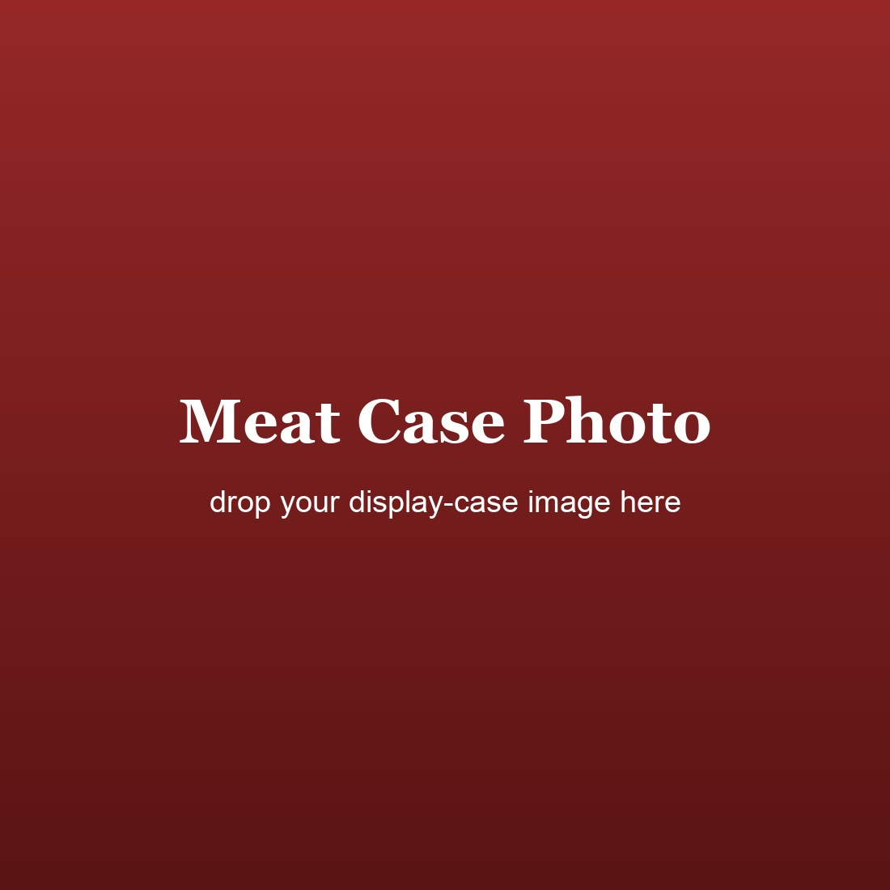

★ 4.8 · Kosher Butcher · Brooklyn, NY
Sanz Klausenburg Fleish has served Boro Park families with premium beef, poultry, and specialty cuts. Hand-selected, glatt kosher, and ready when you are — with delivery right to your door.

Open Today · Closes 6 PM
Call ahead on Fridays & holidays

About the Shop
At Sanz Klausenburg Fleish, every cut is chosen by hand and prepared under strict kosher supervision. From everyday chicken and ground beef to special-occasion roasts, we treat your order the way we'd treat our own family's table.
Generations of Brooklyn families have counted on us for quality, freshness, and a friendly face behind the counter. Stop in, or call ahead and we'll have it ready.
Gallery
Get In Touch
Send us a message and we'll get right back to you. For same-day orders, calling is fastest.